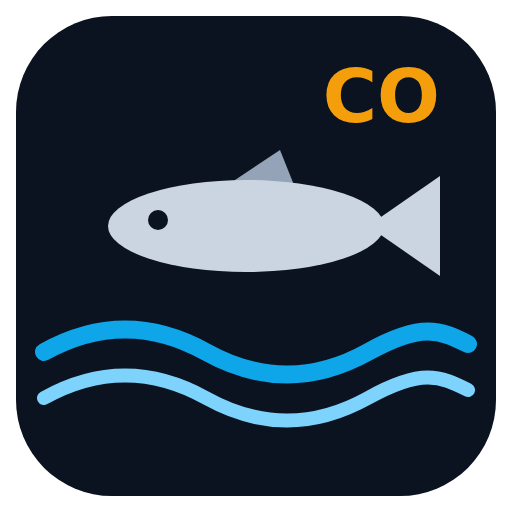

Guides de pêche du bar
Marée calculée sur l'appareil · météo AROME et houle par spot · carte · réglementation · journal de session · analyse de photos.
Finistère (29) 5 guides · 49 spots



Manche (50) 1 guide · 10 spots

Installer sur le téléphone
Une seule application regroupe cet accueil et les six guides. Elle s'ouvre sur cette page. Sur Android, un appui long sur son icône propose des raccourcis vers les trois premiers guides (Chrome n'en affiche pas plus) ; la recherche ci-dessus mène à tous les spots.
Android (Chrome) : la page doit être ouverte dans Chrome lui-même. Si elle s'affiche dans l'aperçu d'une autre application (lien ouvert depuis un message, GitHub…), passe d'abord par menu ⋮ → « Ouvrir dans Chrome ». Ensuite, menu ⋮ → « Installer l'application », ou « Ajouter à l'écran d'accueil » puis « Installer ». Téléphone en anglais : « Install app », ou « Add to Home screen » puis « Install ».
iPhone (Safari) : bouton Partager → « Sur l'écran d'accueil ».
Si tu avais déjà ajouté un guide seul à l'écran d'accueil, tu peux retirer cette ancienne icône.